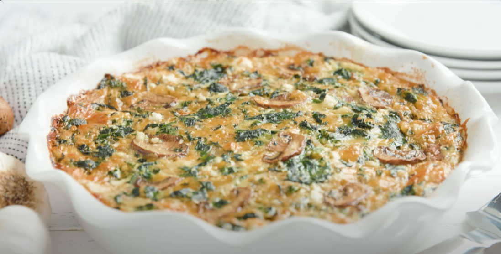

Homepage
Spinach-Quiche

Description
Spinach quiche is a savory egg custard tart or pie that typically
includes spinach, cheese, and a flaky crust. It is a versatile dish that
can be enjoyed for breakfast, brunch, or dinner. The dish is often made
with a combination of eggs, cream, and cheese, with spinach as the
primary vegetable ingredient. It can be customized with various cheeses
and additional vegetables depending on personal preference.
Ingredients
- 1/2 cup butter
- 1 small onion, chopped
- 3 cloves garlic, chopped
- 1 (10 ounce) package frozen chopped spinach, thawed and drained
- 1 (4.5 ounce) can mushrooms, drained
- 1 (6 ounce) package herb and garlic feta, crumbled
- 1 (8 ounce) package shredded Cheddar cheese, divided
- salt and pepper to taste
- 1 deep-dish (9-inch) pie crust
- 4 large eggs
- 1 cup milk
Steps
-
Gather all ingredients. Preheat the oven to 375 degrees F (190 degrees C).
-
Melt butter in a medium skillet over medium heat. Add onion and garlic and saute until lightly browned, about 7 minutes.
-
Stir in spinach, mushrooms, feta, and 1/2 cup Cheddar. Season with salt and pepper.
-
Spoon mixture into prepared pie crust.
-
Whisk eggs and milk together in a medium bowl until combined. Season with salt and pepper.
-
Pour over the spinach mixture in pie crust, allowing egg mixture to thoroughly combine with spinach mixture.
-
Bake in the preheated oven for 15 minutes.
-
Sprinkle the top with remaining Cheddar and bake until set in center, 35 to 40 minutes longer.
-
Allow to cool briefly before slicing and serving, about 10 minutes.